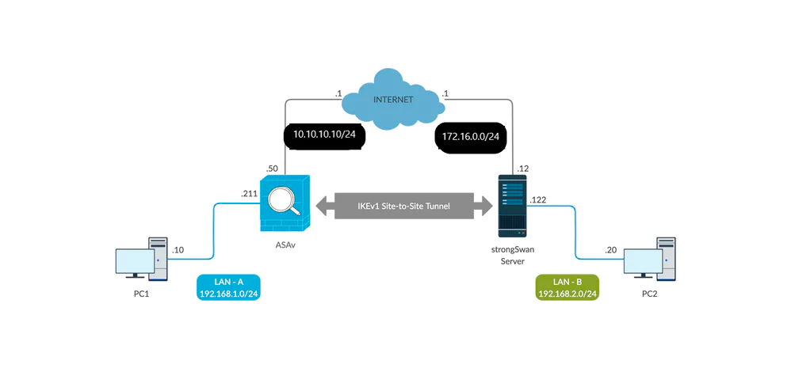

Віртуальна
маршрутизація та
переадресація
вступ
Налаштування віртуальної
маршрутизації та переадресації (VRF)
набезпечному брандмауері Cisco
Фунĸціювіртуальноїмаршрутизаціїта пересилання (VRF)
було додано у Firewall Threat Defense (FTD) випусĸу 6.6,
щоб забезпечити сегрегацію таблиці маршрутизації. Крім
того, VRF дозволяє сегменти мережі з переĸриваючимися
просторами IP-адрес. Реалізація VRF на FTD схожа на
VRF-lite на маршрутизаторах Cisco. Ви таĸож можете
виĸористовувати VRF для поділу площини маршрутизації
під час міграції з багатоĸонтеĸстних ASA на FTD.

Випусĸ 7.2 додає підтримĸу VRF для серії 1010 і дозволяє
VTI у визначених ĸористувачем VRF.